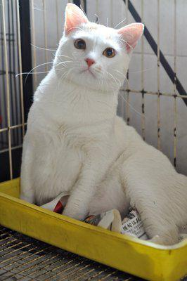
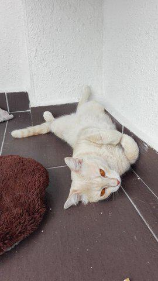
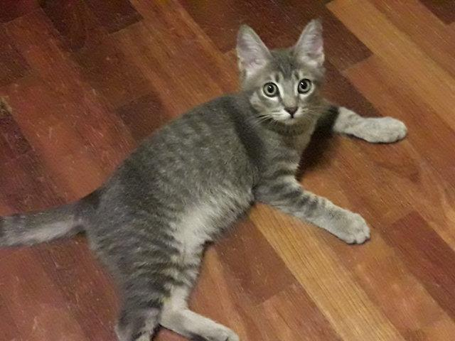
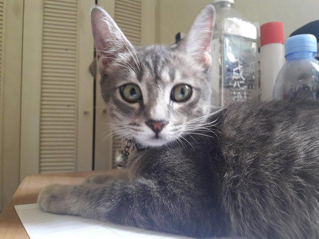
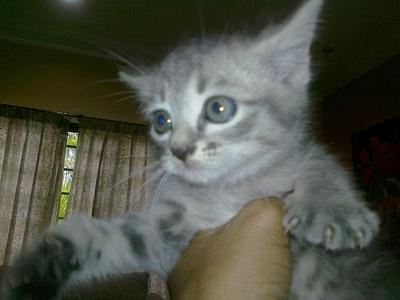
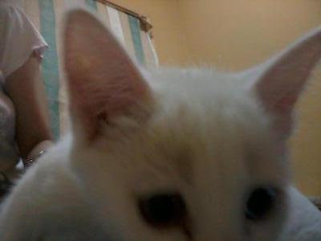
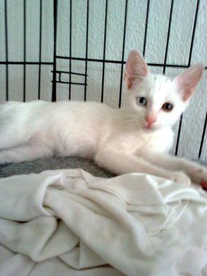

课堂演示材料
寻猫平台测试用例展示
固定测试图片先经过猫检测和特征提取，再与全部发现线索比较。地点和走失日期在图像排序前缩小候选范围。
152活跃发现线索
1757图片向量
江岸区 27 / 江汉区 27 / 硚口区 26武汉三区分布
2025年 40 / 2026年 402025和2026分布
上传走失猫照片→猫检测→地点和时间筛选→图像相似度排序→人工核对
1
同种颜色仍能区分个体
查询猫与干扰猫均呈橘白色，正确身份仍排第 1。


筛选前
正确线索排名 1，候选 152 条。
筛选后
正确线索排名 1，候选 152 条。
演示条件：不使用颜色排除；图库中有 21 条标为橘色的线索，排序依靠个体图像特征。
| 对象 | 排名 | 相似分 | 区县 | 目击时间 |
|---|---|---|---|---|
| 正确身份 | 1 | 0.9223 | 硚口区 | 2025-09-01 18:56 |
| 同色相似猫 | 5 | 0.3727 | 硚口区 | 2025-03-15 15:26 |
2
地点筛选排除异区相似猫
仅看图片时异区相似猫排第 1；限定武汉市硚口区后，正确线索升至第 1。



筛选前
正确线索排名 2，候选 152 条。
筛选后
正确线索排名 1，候选 26 条。
演示条件：城市=武汉市，区县=硚口区。错误候选位于江汉区。
| 对象 | 排名 | 相似分 | 区县 | 目击时间 |
|---|---|---|---|---|
| 筛选前第1名 | 1 | 0.6981 | 江汉区 | 2025-05-01 17:52 |
| 地点筛选后的正确身份 | 1 | 0.5786 | 硚口区 | 2025-09-01 08:32 |
3
走失日期排除更早目击
猫在 2026 年走失时，2025 年目击不可能是本次走失后的线索；过滤后正确身份升至第 1。


筛选前
正确线索排名 2，候选 152 条。
筛选后
正确线索排名 1，候选 112 条。
演示条件：走失日期=2026-01-01，系统排除所有 2025 年目击线索。
| 对象 | 排名 | 相似分 | 区县 | 目击时间 |
|---|---|---|---|---|
| 筛选前第1名 | 1 | 0.7758 | 硚口区 | 2025-03-15 12:38 |
| 时间筛选后的正确身份 | 1 | 0.7374 | 江岸区 | 2026-10-08 09:45 |
80 张同猫查询的批量结果
| 方案 | Top 1 | Top 5 | Recall 1 | 候选数中位数 |
|---|---|---|---|---|
| 仅图片 | 70/80（87.5%） | 75/80（93.8%） | 70/80（87.5%） | 152 |
| 图片和地点 | 75/80（93.8%） | 78/80（97.5%） | 75/80（93.8%） | 27 |
| 图片和走失日期 | 71/80（88.8%） | 76/80（95.0%） | 71/80（88.8%） | 112 |
| 图片 地点和走失日期 | 75/80（93.8%） | 78/80（97.5%） | 75/80（93.8%） | 14 |
Recall 1 要求正确线索排第一且相似分不低于 0.30。筛选条件来自正确线索的武汉区县和对应年份，用于验证筛选逻辑，不表示模型可以自动知道地点或走失日期。